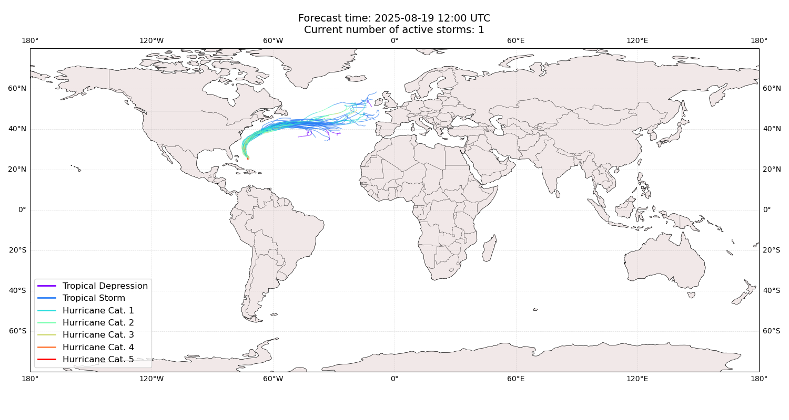
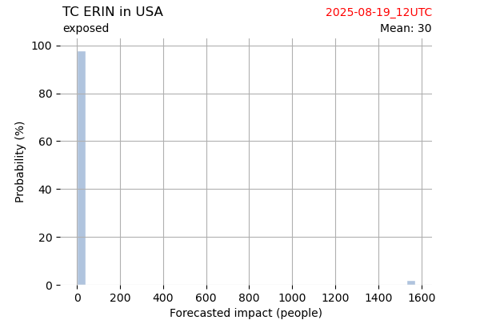
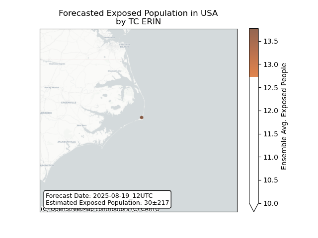
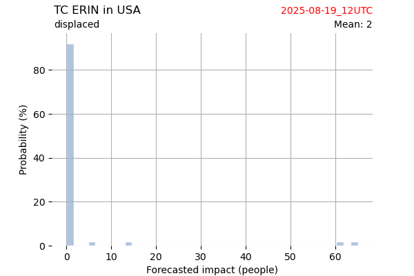
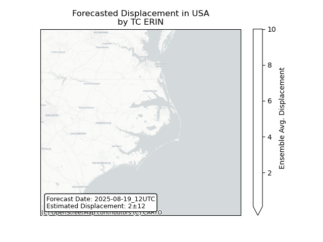

Displacement forecast
This is a WIP. All this is going to change, for now we’re just
dumping things here. ## Forecast for 2025-08-19 12:00 UTC
There are 1 active named storms.

Active storm ensemble tracks
ERIN United States: areas
affected
 ## ERIN United
States: people exposed
## ERIN United
States: people exposed

Histogram of possible exposed
population

Map of possible exposed
population
ERIN United States: people
displaced

Histogram of possible displaced
population

Map of possible displaced
population